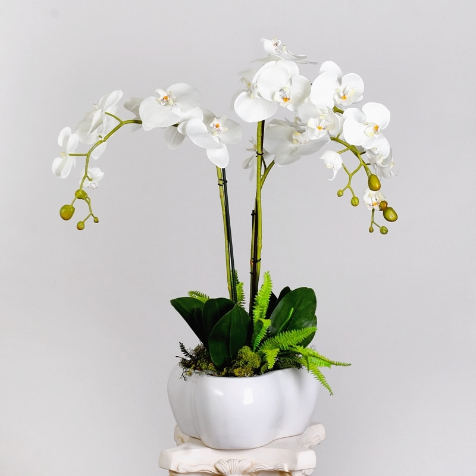
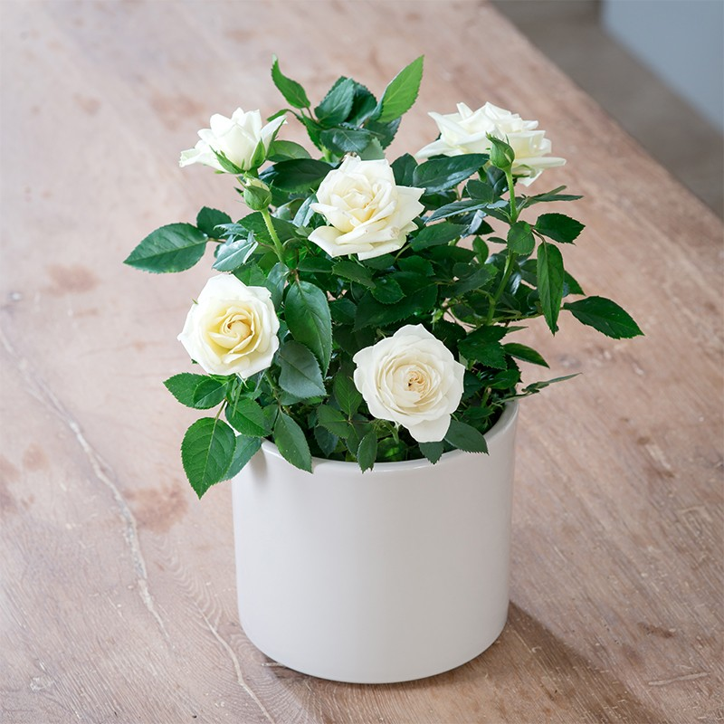
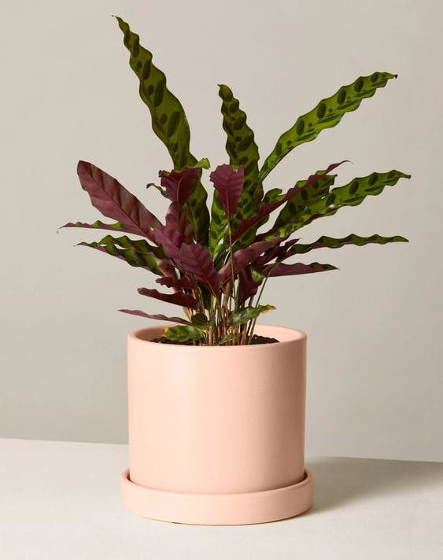
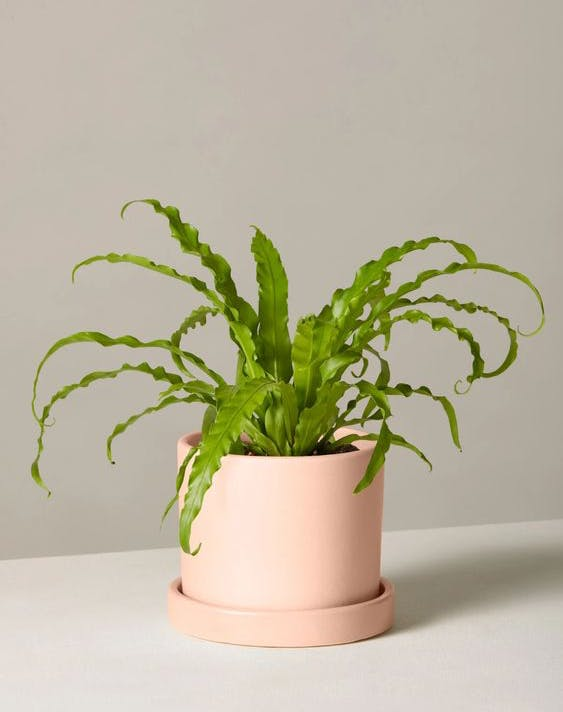
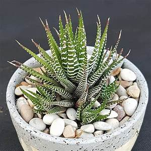

Begonia
Peperomia are evergreen perennials with simple, often succulent leaves and very small greenish-white flowers borne in slender spikes or panicles. Argyreia is a bushy perennial to 20cm tall, with ovate green leaves, attractively striped with silver bands between the veins, borne on red stalks; flowers greenish, minute, in short spikes. Likes partial shade no direct sunlight. Easily over watered only needs a 25ml every week.

Spider plants
These easy-to-grow houseplants look especially nice in a hanging basket and were a favorite in Victorian-era households. Here’s how to grow spider plants in your home!Keep plants in bright to moderate indirect sunlight. Spider plants do not appreciate direct, hot sunlight, which can burn their leaves, causing brown tips and spots.In the spring and summer months, keep the soil moist to encourage growth. Do not let soil dry out too much.

Moth orchid
Houseplants or greenhouse plant these plants enjoy indoor conditions all year round, with a minimum temperature requirement of 18°C (65°F).Orchids prefer high air humidity, but their roots will rot easily in wet compost. Water once a week make sure the roots are well drainned the easiest way to do this is by placing water in the pot for 15 minutes after the plant is watered take the plant out to drain.
Roses
Roses can be a hard to maintain: they thrive in full sun at least 6 hours of direct sun light a day. Soil should be kept evenly moist throughout the growing season.The rule of thumb for watering roses is to make sure roses get about 2 inches a week. Deep soakings are much better than frequent, shallow watering.
Boston fern
fern species that can grow as tall as 7 feet in its native habitat they look great in a hanging basket and very low mainenance. They like to be kept in warm, humid conditions and don't like air from windows or heating.During the winter when the plant isn't growing, you can reduce watering, but your fern should never be allowed to completely dry out.The Boston fern needs bright indirect light when grown indoors and outdoors shaded area..

Sunflower
Sunflowers need a lot of sunlight they flow the sun that is why they always facing up. They easy to grow and grow very quick in summer months. You put seeds in the ground or in a pot from April onwards and mature within 95 days. The largest sunflower varieties grow to over 16 feet in height.

Rattlessnake plant
A Rattlesnake plant is a fairly tall, with leaves that can grow 30 inches tall or more. If your plant is exposed to cold or dry air (50ºF or 10ºC), there is a possibility that its leaves could start to droop or turn brown even though this is one of the most restraint plants when it comes to browning leaves. The Rattlesnake prefers slight sandy soil that allows good water drainage. The best place to put it would be in an indoor patio or in one of the rooms in your home near a window that doesn’t have the sun directly facing it.This species is not that difficult to care for.
Bird's nest fren
Healthy plants can have fronds up to 5 feet long, but bird's nest ferns grown as houseplants typically have fronds that grow only about 2 feet long. The plants have a moderate growth rate. They're best planted in the spring, though houseplants generally can be started year-round. Partial shade to full shade; avoid direct sun. Can subtain moist and well-drained soli. They like moisture in high humidity if houseplant the bathroom is a great place to put them.
Haworthia zebra
Haworthia Zebra plants! These spiky, cacti-looking monsters are perfect alternatives to aloe plants. And they can also go for several weeks without water in case you’re the type of person who tends to forget to take care of your greenery.
Bamboo palm
Bamboo is usually a low-maintenance, hardy plant. It rarely has issues with pests or diseases, and it typically doesn’t require pruning. You can remove old canes at their base if they begin to look unsightly. Make sure to plant your bamboo palm in well-drained soils. While these plants like to remain consistently moist, they don't tolerate standing water; 1-3 waterings a week should do the trick. Likes full and partial sun otherwise it won't grow properly within enough sun light.